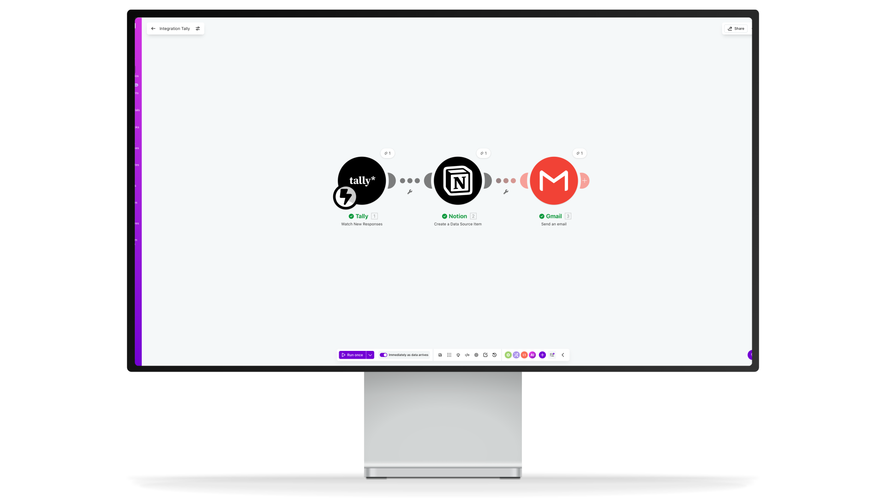

Les données visibles dans les captures sont fictives et ont été générées pour protéger la confidentialité de la cliente.
Parce que votre temps devrait aller à vos clients, pas à votre boîte mail.

Camille est autoentrepreneuse, représentante de marques de parfums. Elle prospecte, conseille et vend à ses clients. Son métier repose entièrement sur la relation humaine et la recommandation. Mais à chaque nouvelle demande, c'est la même histoire : noter les infos à la main, rédiger une réponse, et essayer de ne rien oublier. L'admin mangeait du temps qu'elle aurait dû passer à vendre.
Construire un système de réception et de traitement des demandes entrantes, sans saisie manuelle. Formulaire structuré, enregistrement automatique dans Notion, email de confirmation immédiat et alerte de relance à 48h. Camille ne touche plus à rien jusqu'à ce qu'il soit temps de répondre.
Le formulaire remplace tous les canaux d'entrée disparates. En 4 étapes courtes, le prospect partage son identité, ses préférences olfactives, son budget et ses inspirations. Une barre de progression visible à chaque étape. Une page de remerciement qui pose d'emblée le bon ton : « Je reviens vers toi dans les 48h. » Camille le partage où elle veut, le système fait le reste.


Dès qu'un formulaire est soumis, les informations arrivent automatiquement dans Notion. Chaque prospect a sa fiche, son statut, ses préférences et sa date de contact. Le tout dans un workspace pensé pour grandir : à terme, d'autres outils et bases pourront venir s'y greffer selon les besoins de l'activité.
Deux scénarios Make s'activent automatiquement. Le premier se déclenche à chaque nouvelle soumission Tally : les informations arrivent dans Notion et un email de confirmation personnalisé part au prospect dans la foulée. Le second tourne chaque matin : il détecte les demandes sans réponse depuis plus de 48h et envoie une alerte à Camille. Elle ne touche à rien jusqu'à ce qu'il soit temps d'agir.


“Au moins maintenant je passe mon temps à conseiller mes clients, pas à gérer de l'administratif. C'est quand même ça l'objectif.”
Un système qui contient
Un accompagnement sur-mesure du début à la fin.
Quelques automatisations et vos prochaines demandes seront gérées avant même d'ouvrir votre boîte mail.